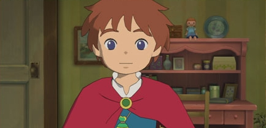
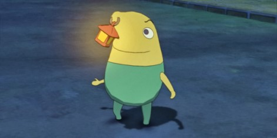
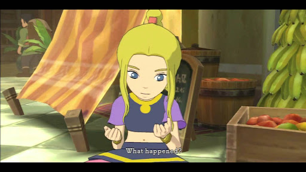
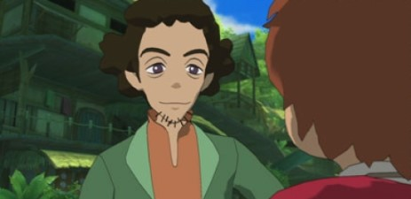

Oliver is a young boy who is the protagonist of Ni No Kuni: Wrath of the White Witch. He lives a joyful life at first until his mother dies unexpectedly after she saves him from drowning. He cries onto a stuffed toy she made for him and his tears bring the doll to life. The doll says its name is Drippy and there is a chance he can save his mother in his world, through his mothers' soul mate, who are two people who share souls and usually share certain attributes. He is nicknamed "Cry Baby Bunting" (Meso-kun in Japan) by Drippy. This stems from Oliver's continuous crying before Drippy's revival.
Drippy is a fairy who serves as Oliver's companion and guide in Ni no Kuni: Wrath of the White Witch. He is the proclaimed Lord High Lord of the Fairies, whom the evil Shadar banished to Motorville as a doll. Allie gave him to her son Oliver and after her death, is restored by Oliver's tears. He takes Oliver to his world in hopes of saving this other world and his mother. He can help in battles by throwing glims, orbs which restore health or magic, and by using his Tidy Tears ability.
Esther is a songstress who joins Oliver on his quest. She is the daughter of the Great Sage, Rashaad. Esther is known to have a fiery personality, which causes her and Swaine to butt heads frequently. Her real-world soulmate is a shy girl named Myrtle, who is nicknamed Starey-Mary by the children because she never leaves her room and always looks out her window. She initially had part of her heart removed by Shadar, but Oliver helps her return to her former self.
Swaine is a thief who joins Oliver on his quest. Oliver finds him in Castaway Cove, where Swaine has gained a bad reputation as a thief, even before he stole an Alchemy cauldron and gave it back for no reason. After eliminating the Nightmare in his heart and restoring his Restraint, Swaine decides to join the group as they go to Hamelin. He never likes to talk about his past. Swaine is actually Gascon, the eldest son of the former Emperor of Hamelin and Marcassin's brother. He was very angry in his youth, believing his father favored his younger brother over him since Marcassin could use magic which was required for any future ruler of Hamelin as they must also become a Great Sage. He sets off on his own and ends up becoming a thief. But despite his anger at his father, he still loved him and his brother deeply.
All image and game content is owned by their respective creators.